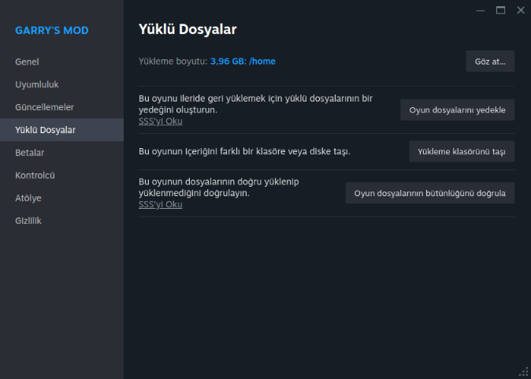
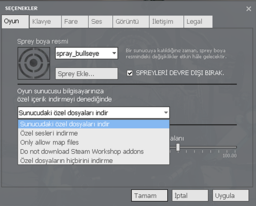

Sıkça Sorulan Sorular
Etrafta her şey error, ne yapmalıyım?
Gerekli workshopları indirdiğinizden emin olunuz.
Eğer workshopların hepsini indirmenize rağmen error alıyorsanız, deneyebileceğiniz birkaç yol mevcut. Bunlar:

|
|
|  |
|
|
|
|
|
|
|
|
|
|  |
|
"This typically means you are running out of Video Memory on your GPU" hatası alıyorum?
Oyunda görüntüler kesik kesik; bir taraf var, bir taraf yok. Görüntüler iç içe girmiş. Ne yapmam gerekiyor?
ESC tuşuna basınız, ardından "Oyun Ayarları"na basınız. Görüntü kısmına gelerek "Gelişmiş"e tıklayınız ve ardından "Model Detayları"nı yüksek seviyeye ayarlayınız. Ancak, bu değişikliği yaptığınızda oyundan donup kapanabilir. O yüzden bu değişikliği yaparken üzerinde Bio-organ vb kullanmamış olmanızı öneririz.
Pembe-Siyah Hatasını nasıl çözebilirim?
Workshoplarınız tamam ve düzgün ise büyük olasılıkla CS:S content'ten kaynaklı bir sorun çözmek için CS:S indiriniz.
Konsol/Console Nedir?
oyuncuların oyun içindeki komutları girerek çeşitli işlemler yapmalarını sağlayan bir araçtır. Bu konsol sayesinde oyun ayarlarını değiştirmek, hata ayıklamak gibi işlemler gerçekleştirilebilir.
Tuşlarım çalışmıyor, neden?
Bir problem oluşmuş olabilir, oyun ayarlarından klavye menüsüne gelerek varsayılan düzeye geçip sorunu kontrol edebilirsiniz.
Eğer sorun çözülmez ise konsolu (` tuşu) açınız ve aşağıdaki komutları yazınız.
unbindallexec config_default.cfgOyunda sesim diğer oyunculara gitmiyor, ne yapmalıyım?
İlk önce oyun ayarlarından iletişim sekmesinden mikrofonunuzu test etmelisiniz. Ardından mikrofon ayarlarına girip Steam arayüzüne yönlendirecek ve orada mikrofonunuzu seçmelisiniz. Test yaptığınız halde ses gitmiyorsa, Windows ayarlarınızdan kontrol etmeniz gerekebilir. Sanal mikrofon uygulamaları varsa bunları devre dışı bırakıp tekrar deneyiniz.
Oyunda yetkili yok ve oyuncudan şikayetçiyim. Ne yapmalıyım?
Gerekli delilleri toplayarak MoonGaming Discord sunucusuna gelip ticket açmanız gerekmektedir.
Sunucudan uzaklaştırıldım, nasıl itiraz edebilirim?
MoonGaming Discord sunucusuna gelip ticket açmanız gerekmektedir.
Yetkili nasıl olabilirim?
Yetkili olabilmek için TTT Üstadları ile iletişime geçmelisiniz.